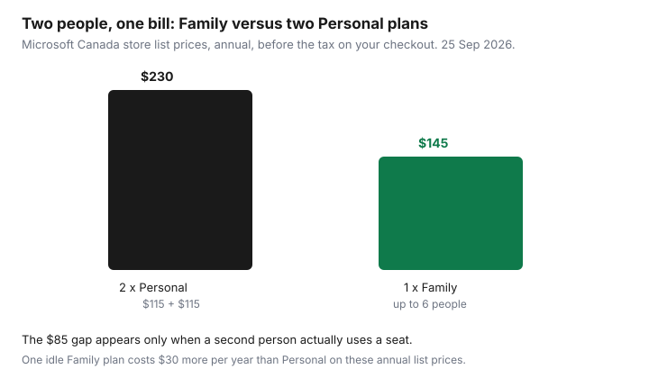

Subscriptions · Canada
Microsoft 365 Personal vs Family in Canada: When the Family Plan Actually Saves
Families in Canada often pay for Microsoft 365 twice, once per adult, or they pay for Family while only one person opens Word. The store page makes the comparison short. Family costs a little more than one Personal plan and a lot less than two. The savings show up only when a second person uses a seat. An empty seat is a $30-a-year habit on the annual list prices, and Copilot does not travel with the invite.
Whether to prepay the year at all is the break-even guide. If the terabyte is really a photo problem, compare it with the iCloud tiers and the Google One comparison before you buy Office to store pictures.
Disclosure: A Microsoft Store purchase, or another desktop-office offer, is an offer type. Saving Optimizer may earn a commission if we later add a partner link. We do not currently claim a Microsoft partnership. Prices are the Canada store figures fetched 25 Sep 2026. Education only.
Key takeaways
- Microsoft’s Canada compare page on 25 Sep 2026 listed Personal at CAD $11.50 a month or $115 a year, and Family at CAD $14.50 a month or $145 a year.
- Two Personal annual plans are $230. One Family annual plan is $145. The $85 gap requires two people who use the subscription.
- Family for one user costs $30 more per year than Personal on those annual prices. Personal already includes 1 TB.
- Microsoft says AI features on Family are for the subscription owner and cannot be shared. Seats still get apps and 1 TB each, up to 6 TB.
- Turn off recurring billing in the Microsoft account before the anniversary. The store page says the plan renews unless you cancel there.
CAD Personal vs Family list prices monthly and annual
Microsoft’s Canada page “Compare Microsoft 365 Plans & Pricing,” fetched 25 Sep 2026, listed consumer plans in Canadian dollars. Personal is for one person: CAD $11.50 a month or CAD $115 a year, with 1 TB of cloud storage and the desktop apps. Family is for one to six people: CAD $14.50 a month or CAD $145 a year, with up to 6 TB (1 TB per person). The same page listed Microsoft 365 Premium at CAD $27 a month or CAD $270 a year, described as everything in Family plus higher AI usage. Premium is a different product. Do not treat it as “Family, but better for everyone.”
Twelve months of Personal monthly is 12 × $11.50 = $138, so the annual Personal plan is $23 less before tax if you keep it all year. Twelve months of Family monthly is 12 × $14.50 = $174, so annual Family is $29 less if you keep it. That is the same ten-month break-even as annual divided by monthly: $115 / $11.50 = 10, and $145 / $14.50 = 10. The prepay test still applies. A household that will drop Office after a school term should stay monthly.
| Plan | Who | Monthly | Annual | Storage |
|---|---|---|---|---|
| Personal | 1 person | $11.50 | $115 | 1 TB |
| Family | 1 to 6 people | $14.50 | $145 | Up to 6 TB, 1 TB each |
| Premium | 1 to 6 people | $27.00 | $270 | Up to 6 TB, 1 TB each |
The store copy says a subscription renews automatically at the regular price and the term you selected, unless you cancel in the Microsoft account. A first-year promo, if you see one, is not the renewal price. Write the renewal figure next to the charge. Office Home 2024 on the same compare page is a one-time purchase for one PC or Mac, not a cloud plan. If you only need desktop Word on one computer and you do not want OneDrive, price that one-time product against a year of Personal before you subscribe. This page does not rank cards or stores.
Break-even at two active users—and why idle seats waste money
One Family annual plan at $145 replaces two Personal annual plans at $115 each, which is $230. The difference is $85 a year before tax, about $7 a month. On monthly billing, two Personal plans are 2 × $11.50 × 12 = $276, and Family is $174. The difference is $102 a year. A labelled Ontario HST illustration at 13 percent, not your bill: two Personal annual totals are 2 × $129.95 = $259.90, and one Family annual total is $163.85. The illustrated gap is $96.05. The shape is the same in any province. The dollars move with the tax on the receipt.

The break-even is the second active user, not the sixth. The moment a second adult or a student installs the apps, or stores files in their own OneDrive, Family is the cheaper container. A third, fourth, or fifth person does not add another $145. They use seats you are already paying for. That is why a household paying two or three Personal plans should move to one Family plan and cancel the extras after the files are in the right accounts.
Idle seats waste money in the other direction. Family for a single user is $145 − $115 = $30 more per year than Personal on the annual list prices, and $3 more per month on the monthly prices ($14.50 − $11.50). You do not get a private 6 TB drive. You get empty invitations. If the other people in the home use Google Docs or the free web apps and will not move, buy Personal. Count a person as active only if they signed in during the last month or their OneDrive holds files they still need. A seat accepted in 2024 and never opened is idle.
1 TB OneDrive per person: when cloud storage alone justifies Family
Each Family member gets their own 1 TB. The owner does not get 6 TB in one pile. Microsoft’s compare page says “up to 6 TB of secure cloud storage (1 TB per person).” Storage alone justifies Family when at least two people would otherwise pay for a large cloud plan, and they will actually put files there.
Price the substitute. Apple’s Canada iCloud+ table, published 16 Sep 2026, lists 2 TB at $12.99 a month, which is $155.88 over twelve months, shareable with up to five other family members. That is more than one Family annual plan at $145, and the Microsoft plan also includes the desktop apps. If the household already needs Word for two people and would otherwise buy a 2 TB photo plan, Family can cover both jobs. If the household only needs photo backup, iCloud or Google One can be the smaller bill. Google’s Canada-priced plans view captured 25 Sep 2026 listed a 2 TB Google AI Plus plan at CA$13.99 a month. That year is about $167.88 before any annual discount Google shows on the toggle. Read the live currency. The photo decision is the ecosystem guide.
One person who wants 1 TB of OneDrive should buy Personal, not Family. Personal’s 1 TB is the same size as one Family seat. Buying Family “for the storage” when nobody else will use a seat pays $30 a year for invitations. A household that needs more than 1 TB for a single photographer should look at iCloud 2 TB or a Google 2 TB plan, or at Premium only if the owner also wants the higher AI limits. Do not buy six seats to enlarge one person’s drive. That is not how the quota is described.
Copilot / AI feature limits on shared plans (owner-only nuances)
Microsoft’s Canada compare page says Family includes the productivity apps with Copilot, and the footnote is the part that matters: AI features are only available to the subscription owner and cannot be shared. The same sentence applies to Premium and to the business-flavoured Pro plan mentioned on that page. A partner who joins Family gets their own apps, their own 1 TB, and sign-in on up to five devices at once. They do not inherit the owner’s Copilot allowance.
Premium, at $270 a year on that page, raises AI usage for the owner. It does not turn Copilot into a family feature. If the reason you are looking at Premium is “the kids need the AI too,” the page you are reading does not say that. If the owner is the only person who uses Copilot inside Word, Excel, PowerPoint, OneNote, or Outlook, Personal or Family already includes Copilot for that owner, with usage limits. Microsoft points those limits to a credits explainer. Read the current limit before you step up to Premium for “unlimited,” a word the compare page does not use.
Minimum age rules can apply to AI features. The page says so in a footnote. A teen’s seat can still be worth it for Word and OneDrive even when Copilot is not available to them. Do not pay Premium prices to solve an age or sharing rule the plan does not waive. Defender is included with Personal and Family on the feature table. The page also says some Defender identity features are described as US only in the FAQ. Do not buy the plan for a US-only identity monitor if you live in Canada. Read the feature line for your region.
Cancel or turn off auto-renew in Microsoft account before anniversary
The Canada store page says the subscription renews automatically at the regular price and the selected term unless you cancel it in the Microsoft account. That is the control. Not the email receipt. Not a reply to the renewal notice. Sign in at the Microsoft account that pays, open Services & subscriptions, select the Microsoft 365 plan, and choose the cancel or turn-off-recurring-billing path the screen offers. Save the confirmation. The end date on that screen is the date access stops, which for a prepaid year is often the anniversary, not today.
Do this before the anniversary, not the morning of. A renewal that posts is a new term. Put a reminder 30 days out to decide, and 7 days out to confirm the recurring billing is off if you are leaving. That pair of reminders is the calendar method. If you paid through a retailer or a third-party key, the Microsoft account may tell you the subscription is managed elsewhere. Follow that pointer. A key in a drawer is not a cancel button.
If you are moving from two Personal plans to one Family plan, start Family, invite the second person, and move their files before you cancel the spare Personal plan. Cancelling first can put the desktop apps into a reduced mode. Microsoft’s compare FAQ says that if you do not connect to the internet at least every 31 days, the apps can go to reduced functionality: view and print, but not edit or create. A cancelled subscription is a stronger stop than that. Finish the file move, then cancel the plan you do not want, and check the card on the next statement.
Libre alternatives for households that only need Word occasionally
A household that opens a letter a few times a year does not need a $115 subscription to type it. Microsoft’s own compare FAQ points people who are not paying toward the free apps. Word, Excel, and PowerPoint on the web, with a Microsoft account, cover occasional files if you can accept the browser versions. LibreOffice is the offline suite that opens common Word and Excel files without a subscription. It is free software, not a coupon. Google Docs is the other no-fee path if the household already lives in Gmail. Pick one, so you are not learning three tools to avoid a bill.
Use a paid Microsoft plan when someone in the home relies on desktop features every month: long Word documents with review marks, Excel workbooks that the web app mangles, or Outlook as the household mail client. That person passes the six-month use test. Everyone else can stay on the free web apps until they fail a real task. A student plan, if someone qualifies, is a separate price on Microsoft’s student page. Read that page before you put a student on Family “because it is simpler.” Simpler is $145. Eligible student pricing can be less. Confirm it there.
If you do buy, buy from the Microsoft account you can cancel, and record the term in the sheet from the annual-versus-monthly guide. A Microsoft Store or other software checkout is an offer type, not a requirement. The free path is complete for occasional letters. The paid path is for people who already work in those apps most months, shared as soon as the second person does too.
Sources & date stamps
- Microsoft Canada, “Compare Microsoft 365 Plans & Pricing,” fetched 25 Sep 2026: Personal CAD $11.50/month or $115/year; Family CAD $14.50/month or $145/year, 1 to 6 people, up to 6 TB (1 TB per person); Premium CAD $27/month or $270/year. AI features for the subscription owner only and cannot be shared. Auto-renewal unless cancelled in the Microsoft account.
- Same page FAQ: share Family with up to five other people; apps need an internet connection at least every 31 days or they can enter reduced functionality mode; some Defender wording is described as US only in the identity-monitoring answer.
- Apple Support (CA), iCloud+ plans and pricing, published 16 Sep 2026: Canada 2 TB at $12.99 a month. Used here only as a storage substitute.
- Google One plans page, Canada-priced view captured 25 Sep 2026: Google AI Plus (2 TB) CA$13.99 a month. Confirm the currency on your screen.
- Ontario 13 percent figures are a labelled illustration, not a tax assessment.
Frequently asked questions
What do Personal and Family cost in Canada?
On 25 Sep 2026 the Microsoft Canada store listed Personal at CAD $11.50 a month or $115 a year, and Family at CAD $14.50 a month or $145 a year. Confirm tax on your checkout. Premium, the higher AI tier, listed at $27 a month or $270 a year.
When does Family cost less than two Personal plans?
As soon as a second person uses a seat. Two Personal annual plans are $230. One Family annual plan is $145. That is $85 less before tax, if both people actually use the apps or the storage.
Is Family worth it for one person who wants the terabyte?
No. Personal already includes 1 TB. Family is $30 more per year on the annual list prices and adds seats, not a larger private drive for the owner. Buy Family when other people will use their own 1 TB.
Do family members get Copilot?
Microsoft’s Canada compare page says AI features on Family are for the subscription owner and cannot be shared. Everyone else gets the apps and their own 1 TB. Premium does not change that owner-only rule.
How do I stop the renewal?
Open the Microsoft account, then Services and subscriptions, and turn off recurring billing or cancel before the anniversary. The store page says the subscription renews at the regular price and term unless you cancel there. Read the screen for the end date.